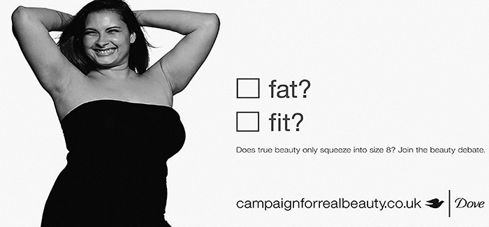
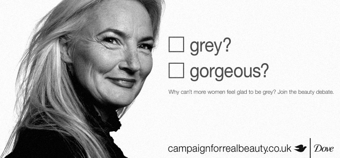

The Dove Self
Esteem Project
Advertising is everywhere therefore it cannot be avoided.
Societies are exposed to advertisement in all its forms wether its in a newspaper, magazine, on billboards
or while driving down a highway.
Societies are exposed to advertisement in all its forms wether its in a newspaper, magazine, on billboards
or while driving down a highway.
It’s omnipresence and through the power of persuasion advertising defines what is “normal” and what is “desirable”.
However it’s crucial to acknowledge that what is portrayed is superficial and therefore impossible to reach.
For example the Body shaming tactic which diminished women’s role in society by calling out rounder women and portrayed them as unhappy in order to sell their product indirectly shows how through the use of imagery women tend to be judged and judge themselves if “ they don’t look like the portrayed models”.
“Advertising is one of the most potent messengers in a culture that can be toxic for girls’ self esteem” and it is not a coincidence that the number of women with low self esteem only increased with time. In 2007 a study was taken as part of the Dove campaign.
“The study revealed that by the time the average girl is 12 years old, she will have been exposed to more than 77,000 advertisements.” For that reason the Dove campaign’s objective was “to help inspire a greater awareness of misogynistic advertising”. The campaign included 32 women, from more than 15countries and aged from 11 to 71.
Each women talked about what beauty means to them and how they each overcame any insecurities. Media and pop culture bombard women with “their ideal beauty” however Dove is one of the few brands that “has served as a mirror for its efforts”
For example the Body shaming tactic which diminished women’s role in society by calling out rounder women and portrayed them as unhappy in order to sell their product indirectly shows how through the use of imagery women tend to be judged and judge themselves if “ they don’t look like the portrayed models”.
“Advertising is one of the most potent messengers in a culture that can be toxic for girls’ self esteem” and it is not a coincidence that the number of women with low self esteem only increased with time. In 2007 a study was taken as part of the Dove campaign.
The mission was to highlight the pressure of advertising on young girls.
“The study revealed that by the time the average girl is 12 years old, she will have been exposed to more than 77,000 advertisements.” For that reason the Dove campaign’s objective was “to help inspire a greater awareness of misogynistic advertising”. The campaign included 32 women, from more than 15countries and aged from 11 to 71.
Each women talked about what beauty means to them and how they each overcame any insecurities. Media and pop culture bombard women with “their ideal beauty” however Dove is one of the few brands that “has served as a mirror for its efforts”

